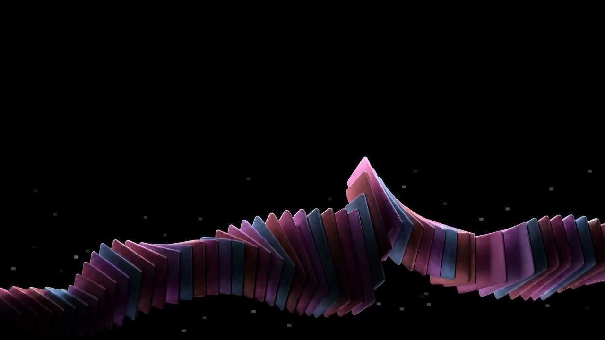

Tracing® the unseen
We distill fragmented data into sharp awareness, arming operators with live context to detect and neutralize with accuracy.
- Risk surface
- Critical
- Captured events:
- 0

We distill fragmented data into sharp awareness, arming operators with live context to detect and neutralize with accuracy.